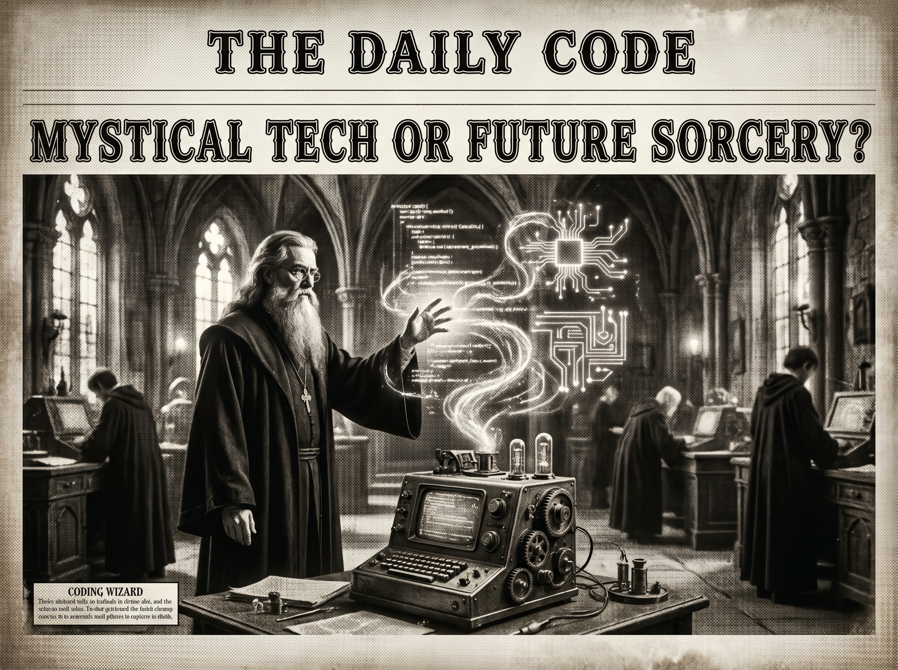

Morning Edition
6:00 AM CDTFinance & Markets
Markets Hit Friday with an Oil-Price Interrupt
U.S. equities came off record levels Thursday as oil prices whipsawed around U.S.-Iran tension, with AP and market desks framing crude as the day’s macro exception handler. Translation for the morning: risk appetite is present, but the energy stack can still throw runtime errors.
— Sources: AP News and The Motley Fool via Google News markets feed, May 7–8, 2026Futures Watch Hormuz While Single Names Spark
Investor’s Business Daily flagged rising oil and U.S.-Iran clashes as futures context, while late moves in Akamai and IREN kept the equity screen from feeling like one giant macro chart. The useful signal: geopolitics sets the weather; company-specific execution still makes its own microclimate.
— Source: Investor’s Business Daily via Google News markets feed, May 8, 2026Private Credit Gets Another Stability Warning
The Financial Stability Board published a report on private-credit vulnerabilities, while CNBC coverage noted the sector’s roughly $2 trillion boom is raising watchdog concern. Private-market opacity is starting to look like technical debt with systemic blast radius.
— Sources: Financial Stability Board and CNBC via Google News private credit feed, May 6–8, 2026World & US
Hantavirus Cruise Cluster Sends Contact Tracers Worldwide
Multiple outlets reported countries, including the U.S., searching for passengers who left a Dutch cruise ship after a first death linked to hantavirus. It is a stark logistics lesson: health risk propagates like distributed state when everyone has already left the node.
— Sources: Yahoo, CBS News, Live Science, CNN, and Al Jazeera via Google News world feed, May 8, 2026UK Local Results Pressure Starmer’s Labour
Google News world headlines highlighted early UK election results showing losses for Keir Starmer’s Labour and gains for rival parties. Local elections are often treated like unit tests; today they are reading like a production health check.
— Source: Reuters coverage surfaced via Google News world feed, May 8, 2026Trump Says the Iran Ceasefire Still Holds
The Washington Post, New York Times, CNBC, NPR, and USA Today led U.S. feeds with live coverage of fresh U.S.-Iran exchanges and claims that the ceasefire remains intact. The day’s diplomatic debugger has one big watch expression: can restraint survive contact with incidents at sea?
— Sources: The Washington Post, The New York Times, CNBC, NPR, and USA Today via Google News U.S. feed, May 8, 2026
The Friday Scrying Lens: a gothic code-wizard draws tomorrow’s circuitry through the ink of an old newsroom.
"Subtle magic is usually just excellent architecture arriving on time."— The Developer’s Almanac
Sagittarius Horoscope
Justin, today’s Sagittarius reading says admiration and influence arrive best through subtlety, not force. Beautifully paired with Year-of-the-Rat cleverness: let the sharp idea look effortless. Developer translation: don’t over-instrument the room; ship the clean interface, keep the clever parts quiet, and let the work feel inevitable. Lucky hex: #0f172a. Lucky command: git diff --stat. ✨
Tech, AI, Space & Crypto
-
Washington Keeps Feeling for the AI Guardrails
The Jerusalem Post surfaced White House consideration of AI regulations, while state-level stories kept showing how fast policy is trying to catch the model layer. The builder note: compliance is becoming part of the product surface, not a PDF after launch.
— Sources: The Jerusalem Post and KARE 11 via Google News tech feed, May 7–8, 2026 -
AI Is Still the Layoff Narrative’s Sharp Edge
CFO Dive reported tech layoffs climbing with AI remaining a top driver. That does not mean “AI replaces everyone”; it means organizations are reallocating budget toward automation, infrastructure, and smaller teams with higher leverage.
— Source: CFO Dive via Google News AI feed, May 8, 2026 -
Data Infrastructure Keeps Eating the Machine Economy
Robo.ai announced an acquisition of Neurovia for data processing and compression technology, pitching it as infrastructure for machine-to-machine commerce. The pattern is familiar: once agents multiply, bandwidth, memory, provenance, and compression become first-class product decisions.
— Source: PR Newswire via Google News AI feed, May 8, 2026 -
Crypto Watches Regulation and On-Chain Tooling
Crypto feeds pointed to Vietnam piloting regulation, Arkham bringing on-chain intelligence to prediction markets, and broad weakness across major tokens. The useful take: crypto is splitting into two stories at once — policy normalization and sharper analytics for noisy markets.
— Sources: KuCoin, Cryptopolitan, and MarketWatch via Google News crypto/space feed, May 7–8, 2026
Active Reminders
- Test reminder from Nemu (Jan 29)
- Connect Nemu to Notion (Feb 1)
- Research VPN/proxy services for secure agent browsing (Feb 1)
- Create security OpenClaw bot (Feb 2)
- Plaid Integration Research (Feb 4)
- Build Oomi iOS and Android app to connect Nemu to data (Feb 15)